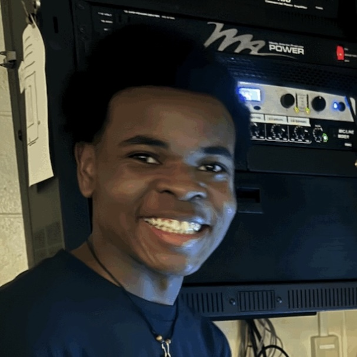

Hello! I’m an aspiring full-stack developer with a focus on Go and Bun JS. I truly enjoy creating tools and projects that challenge me and and help me grow as a developer, while also bringing value to others.
I am currently in my first year at Indiana University's Luddy School of Informatics, Computing, and Engineering, exploring the path toward a Master’s in Computer Science. Welcome to my website! Below, you’ll find some pages to help you get started.
Note: This site is still under construction and may contain some bugs. Thank you for your patience!